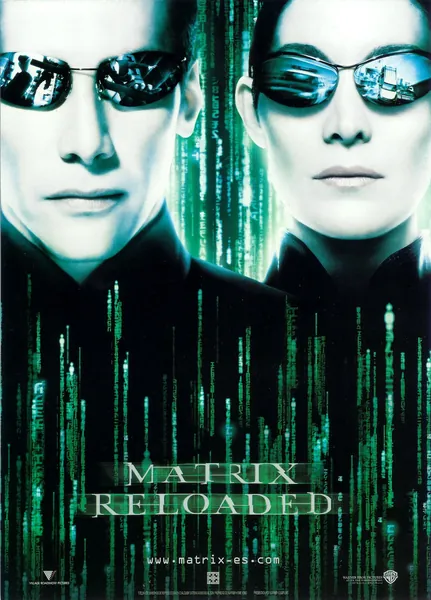

Фильм · 2003 · Боевик, Фантастика
У Зиона осталось 72 часа: к нему пробиваются буры машин, а Нео получает больше вопросов, чем ответов — «Почему я?», «Почему ИИ вообще оставляет людям выбор?» — и с каждой беседой с Пифией или Архитектором он всё меньше напоминает мессию и всё больше — элемент чужого цикла. Сиквел расширяет мифологию: здесь появляются Меровинген, изгнанные хакерские программы и сущности, отказывающиеся подчиняться удалению, а сам сюжет читается как отчет об ошибке в версии 6.0. Меньше революции, больше системного анализа — плюс самая дорогая работа фрилансера в киноиндустрии на шоссе.
Zion has 72 hours left: machines are drilling toward it, and Neo gets more questions than answers — Why me? Why does the AI leave humans a choice at all? — and with every talk to the Oracle and the Architect he looks less like a messiah and more like an element of someone else's cycle. The sequel widens the mythology: the Merovingian, exiled hacker programs, entities refusing deletion, and the plot itself reading like a bug report against version 6.0. Less revolution, more systems analysis — plus cinema's most expensive freelance gig on a highway.
← Вернуться в каталог IT Movies